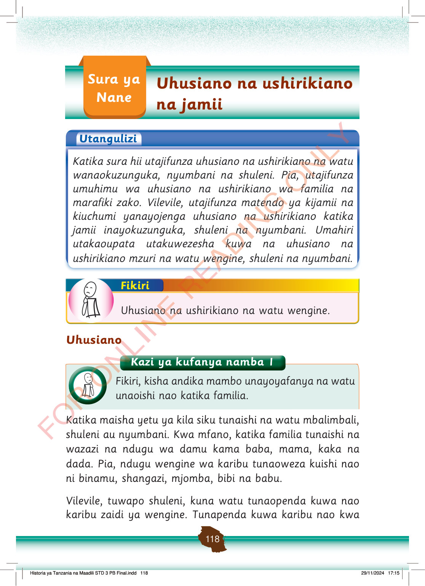

Sura ya Nane: Uhusiano na ushirikiano na jamii.
Sura ya Nane
Uhusiano na ushirikiano na jamii
Utangulizi unaeleza kuwa sura hii inafundisha uhusiano na ushirikiano na watu wa nyumbani, shuleni na katika jamii.
Utangulizi
Katika sura hii utajifunza uhusiano na ushirikiano na watu wanaokuzunguka, nyumbani na shuleni.
Pia, utajifunza umuhimu wa uhusiano na ushirikiano wa familia na marafiki zako.
Vilevile, utajifunza matendo ya kijamii na kiuchumi yanayojenga uhusiano na ushirikiano katika jamii inayokuzunguka, shuleni na nyumbani.
Umahiri utakaoupata utakuwezesha kuwa na uhusiano na ushirikiano mzuri na watu wengine, shuleni na nyumbani.
Fikiri kuhusu uhusiano na ushirikiano na watu wengine.
Fikiri
Uhusiano na ushirikiano na watu wengine.
Uhusiano
Katika maisha yetu ya kila siku tunaishi na watu mbalimbali, shuleni au nyumbani.
Kwa mfano, katika familia tunaishi na wazazi na ndugu wa damu kama baba, mama, kaka na dada.
Pia, ndugu wengine wa karibu tunaoweza kuishi nao ni binamu, shangazi, mjomba, bibi na babu.
Vilevile, tuwapo shuleni, kuna watu tunaopenda kuwa nao karibu zaidi ya wengine.
Tunapenda kuwa karibu nao kwa
Historia ya Tanzania na Maadili STD 3 PB Final.indd 118
29/11/2024 17:15
Kazi ya kufanya namba 1: Fikiri, kisha andika mambo unayoyafanya na watu unaoishi nao katika familia.
Kazi ya kufanya namba 1
Fikiri, kisha andika mambo unayoyafanya na watu unaoishi nao katika familia.